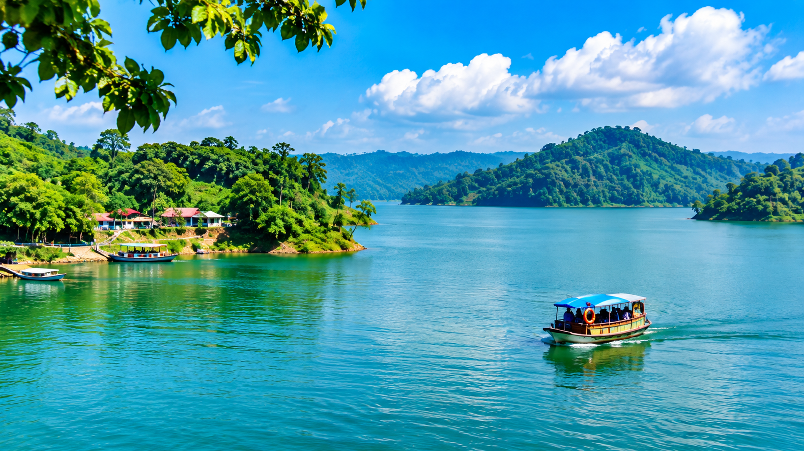
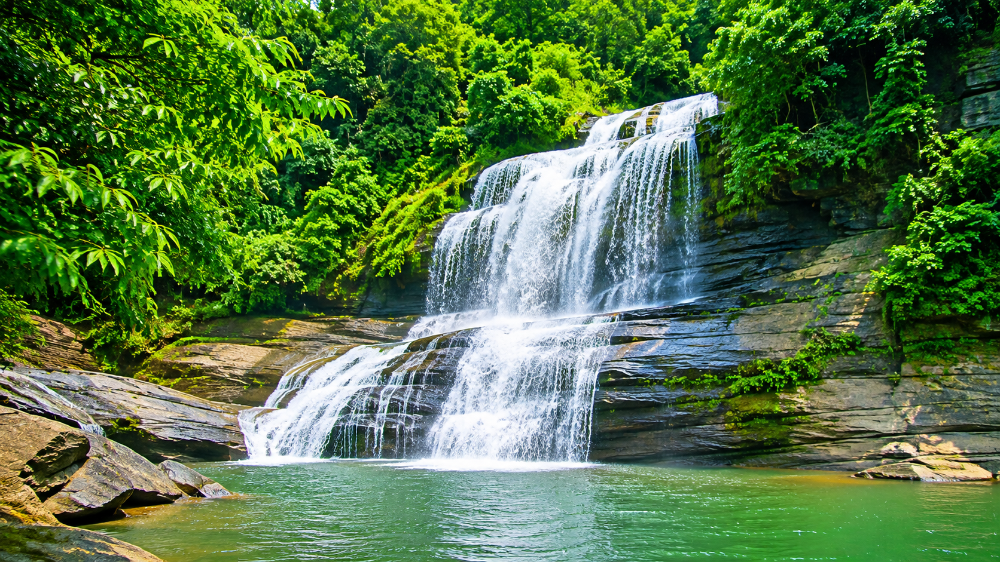
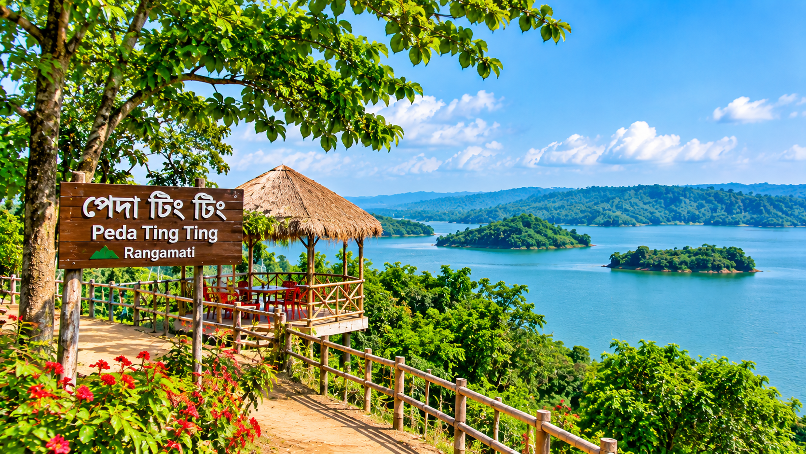
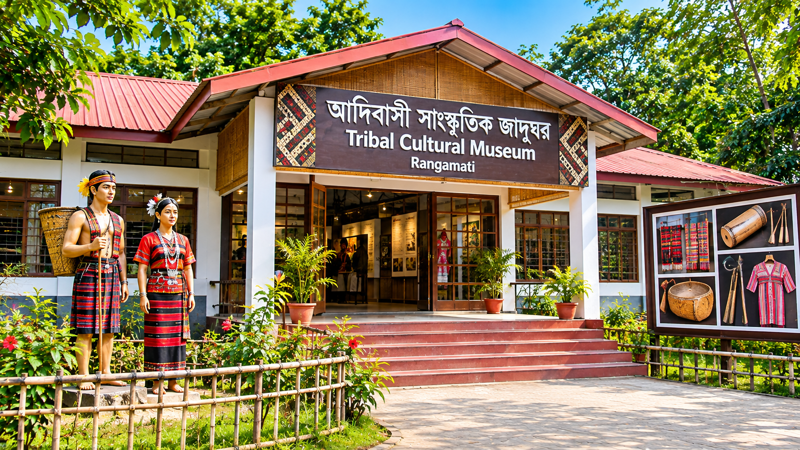

Kaptai Lake
カプタイ湖は、バングラデシュのランガマティにある美しい人工湖です。ボートに乗って湖を楽しむことができ、周囲の山々や自然の景色も楽しめます。観光客に人気のあるスポットです。

ハングイングブリッジ

Shuvolong Waterfall
シュボロンのたきは、バングラデシュのランガマティにある美しいたきです。緑の山々と大きな木々にかこまれていて、しぜんがとてもゆたかな場所です。とくに雨のきせつには、たきの水が多くなり、とてもきれいなけしきを見ることができます。カプタイ湖からボートに乗って行くことができます。しぜんを楽しんだり、しゃしんをとったりするのにぴったりの場所です。かぞくや友だちといっしょに楽しい時間をすごせる人気のかんこうスポットです。

Rajban Vihara
ラジャバン・ビハラは、バングラデシュのランガマティにある有名な仏教寺院です。美しい建物と静かな環境が特徴で、観光客に人気のあるスポットです。歴史や文化を学ぶことができる場所でもあります。

Peda Ting Ting
ペダ・ティンティンは、バングラデシュのランガマティにある美しいかんこうスポットです。カプタイ湖の中にあり、緑の山々ときれいな水にかこまれています。ここでは、ボートに乗って美しいけしきを楽しむことができます。また、地元の伝統的な料理を食べることもできます。しずかなかんきょうの中で、しゃしんをとったり、かぞくや友だちと楽しい時間をすごしたりできる人気の場所です。

Tribal Cultural Museum
部族文化博物館は、バングラデシュのランガマティにある有名な博物館です。ここでは、チャクマ族やマルマ族など、さまざまな民族の文化やれきしを学ぶことができます。博物館には、伝統的な服、楽器、生活の道具、手作りの作品などがてんじされています。ランガマティに住む人々の生活や文化を知ることができる、とても大切な場所です。文化やれきしにきょうみがある人におすすめのかんこうスポットです。